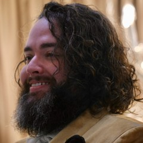
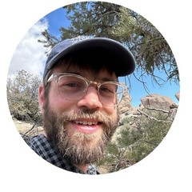
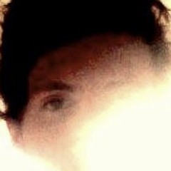

1:1 training · over video
Practice doesn't end
when you stand up.
One-on-one training designed as an extension of your meditation practice. Learn to enjoy exertion, inhabit your body, and carry spacious clarity into movement.
Book a free intro call“It went from an arduous obligation to an extension of my contemplative practice that I find really pleasant and look forward to. My mana and HP are higher than ever. … When I meditate, it's great — and now exercise feels like that too.”
01 · Why it matters
On the cushion, and off the cushion
Many meditators are far more at home in the mind than in the body. When the body becomes a place you can inhabit in all its joy and richness, your practice opens in two directions.
1 · Feel good while you sit
- Drop in faster — embodiment makes it easier to feel steady and settled
- Stay comfortable longer — find an easy seat and meet discomfort skillfully
- More to practice with — opening the body makes sensory experience vivid and available
2 · Feel good while you move
- Actually enjoy exertion — learn to experience movement as delightful
- Extend practice off the cushion — equanimity in motion is less brittle
- Functional strength & mobility — tailored to your body and life
02 · Who it's for
Is this you?
The people I work best with tend to arrive from a few different places. Do any of these sound like you?
“I know exercise is good for me, but it sucks.”
Exercise feels like a grind. You know it's healthy or whatever, but it's decidedly unfun. Thankfully, you know from meditation that your relationship to an experience can change. Maybe it's possible to love exertion.
“I have an exercise habit, but it feels separate from meditation.”
You can show up to the gym and hit your daily run. You like it. But you sense it could be more. You want the clarity you find sitting to come with you when you run, lift, or play on the floor with your kid.
“I'm spacious on the cushion, but I lose it when I start moving.”
You can find real spaciousness in stillness. But where does it go when you start lifting weights — or juggling three balls, or learning a dance step? What if you could close the gap?
03 · What we do together
What we actually do
Our aim while working together is a changed relationship to movement. It's possible to go from intimidated to autonomous, or from a grind to something alive and life-supporting. We use whatever will help you most — strength training, mobility, health metrics and biomarkers, as well as somatics, standing meditation, and posture work.
From mind to body
You might have forty ways to work with a thought and ~none for how to work with your body. We practice attuning to space, sensation, and pleasure while moving. And make sure it transfers to what matters most, whether that’s lifting, running, or playing on the carpet with your toddler.
Games, tasks, improvisation
Exercise doesn't have to be dry and mechanical. It can be fun — games and improvisation help make that obvious. They are a testing ground for playfulness, and for expanding what even counts as “exercise.”
Movement quality and posture
Real-time feedback to help your movement become biomechanically sound and beautiful. Also, support to make sitting and standing practice more easeful and enjoyable.
Learning to fish
I'm not interested in (just) being an accountability partner. I want my clients to own their practice, and to use it as a vehicle to deepen self-trust and personal autonomy. You'll practice movement and articulating the principles behind the movement.
I'm not here to break you, or write you off if you're not “tough enough.” With most clients, I start from where enjoyment is already available, and help grow practice from there.
04 · What it looks like
A typical session
Here are three session outlines, anonymized:
AFinding pleasure in exertion
A meditator who learned to dread exertion after a lifetime of unpleasant exercise.
- 0–10Check-in
- 10–40Listening for pleasurable sensation in exertion — a guided meditation woven through her workout
- 40–60Learning to explore movement sensorially instead of a dry mechanical routine
BFluidity for a busy parent
A parent with a toddler and little spare time.
- 0–10Check-in
- 10–25Active recall — he guides himself aloud through a practice we'd already covered, to test and troubleshoot
- 25–50Guided somatic movement — experiencing the body as a connected whole
- 50–60Squatting and floorwork improvisation and play
CBridging strength and meditation
Already trains regularly, but it feels walled off from his meditation.
- 0–10Check-in
- 10–35Strength work — calibrating load, refining form
- 35–60A guided practice to bring meditation into his runs
05 · What changed
What people say
“Tanner has been a superb trainer for three years now — much of it over video. His approach focused on sustainability rather than complete and utter annihilation, and it helped me grow and maintain consistency. Particularly helpful through rehabbing a knee injury — a judgement-free space. I can't recommend him more highly!”
“I've been pleasantly surprised by how creative Tanner has been — the ‘exercises’ don't feel like exercises at all. We always have a lot of fun and I'm never bored. If you're intimidated about starting personal training, I highly encourage you to try working with Tanner.”
“I felt like I'd never get rid of the pain. Now I can release my low back at will, move my neck into new territory, and I'm back to walking and running.”

Max Soweski“An easy recommendation for anyone who meditates. Meditation can create habits of being static and even disembodied — turns out the antidote to this is feeling into the many accomplishments our bodies achieve on a daily basis! Tanner makes this readily available.”

Joe Gherity“I recommend it as a bridge into easeful movement that I simply didn't think was possible on my own. It expands the possibility space for how you experience your body.”
“Tanner brought new life to my opening awareness meditation practice. By connecting with my body, it became much easier to stay with sensations, slow down, and at times allow thoughts to completely fall away. I find myself wishing this had been available to me earlier, as so many of my meditation sits might have felt more settled and embodied.”

Matthew Phillips“I've had plenty of meditation teachers, instructors, and podcasts tell me to ‘feel the earth support me,’ but to be honest I never really got it. The way I explored it with Tanner made me really feel embodied for the first time — and it's something I still enjoy checking into at various points during the day.”
06 · Money stuff
Making it affordable
Your company may cover this
Many clients get reimbursed through L&D, professional development, or wellness budgets. I provide documentation.
Scholarships available
Students, academics, non-profit staff, between jobs, or working at an impact-driven org? I offer reduced-rate sessions. Tell me about your situation and we'll work it out.
07 · Your trainer
Meet Tanner
Certified personal trainer since 2022. I was on track for a doctorate in physical therapy but left — I didn't want to spend the rest of my life handing people exercise printouts in a sterile clinic that I knew they'd never follow. My way into movement was elite athletics as a kid, but theatre school gave me my first adult taste of movement as joy, expression, and play. Since then I've worked with normies and athletes, and one-on-one to help people out of chronic pain. These days I work mostly with meditators — people who already know transformation is possible, and want to extend that possibility into their bodies. This work grew out of my own practice: for years my meditation stayed heady and uncomfortable until I learned to find openness and enjoyment in the body.
For those who love a list of modalities, here are some of my biggest influences: mainstream exercise science™, Feldenkrais, Alexander, Fighting Monkey Practice, Ido Portal, Vajrayana, dance. I've spent most of the last ten years immersed in these modalities; it's been a joy to shift my focus to teaching them.
08 · Good to know
Frequently asked
Is this remote?
Do I need equipment?
How often would we meet?
What will we actually do?
How is this different from regular personal training?
What does it cost?
Do I need to be fit, flexible, or experienced?
Do I need to be a serious meditator?
Start with a free call
- 1A free 30-minute call — what do you want from a movement practice, and do we fit?
- 2If we're both a yes: a three-month container — weekly sessions, enough time for real change.
- 3A practice that becomes yours — delight in being a body, on and off the cushion, and the skill to keep it going.
I take on a handful of clients at a time.
Book a free callNo pressure to sign up for anything. Prefer to write first? .